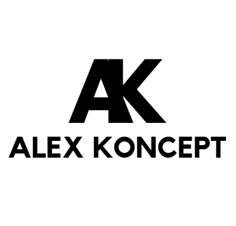

Bienvenue dans mon laboratoire numérique. Chaque "Koncept" que je crée explore un futur possible, à travers l’horlogerie, le code, le design et l’imagination augmentée.

Montres Alex Koncept
Création horlogère indépendante, modding artistique, boîtier signature AK.
HyperNormalSites
Sites dystopiques & interactifs conçus pour se questionner sur le futur à travers la technologie, la société et l'absurde qui nous entoure de plus en plus, codés en HTML/CSS.

Tamacodechi
Ton Tamagotchi développeur dans ton navigateur, il évolue selon ta façon de t'en occuper. Codés en Javascript/HTML/CSS.

IA & Chatbot
Un site interactif pour expliquer l'intelligence artificielle, avec un chatbot intégré. Codé en HTML/CSS/JS.